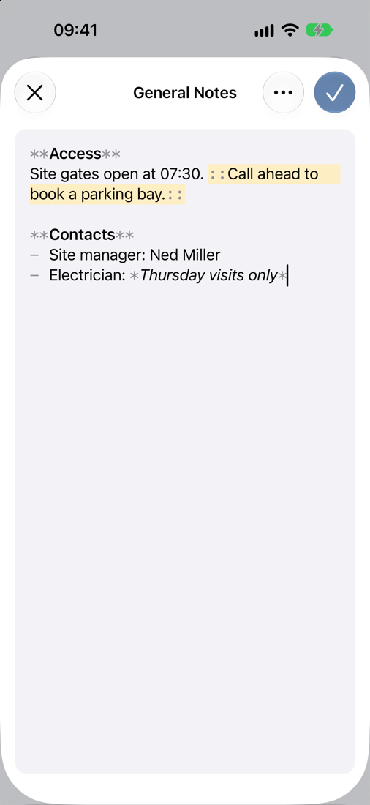

Notes and Markdown
Notes add context that does not fit in a short snag title. Snaglite has notes on every snag, plus Site Notes for a whole site and General Notes for each unit.
Where notes are kept:
- Snag notes – detail about one defect
- General Notes – at the top of each unit’s locations, for anything about the unit as a whole. You choose whether they appear on the report.
- Site Notes – at the top of a site’s units, for access arrangements, contacts and other site-wide information
Formatting your notes
Notes support Markdown formatting. To format text, select it and choose Format from the menu that appears. The options are:
| Option | Typed as |
|---|---|
| Bold | **text** or ⌘B |
| Italic | *text* or ⌘I |
| Highlight | ::text:: |
~~text~~ | |
| Code and code block | `text` |
| Link | [text](https://…) |
| Heading | # Heading |
| List, numbered list, task list | - item, 1. item, - [ ] item |
| Quote | > text |
Lists continue automatically when you press Return. Use Tab and Shift-Tab on a keyboard to indent or outdent a list item.

Formatting carries through to the PDF report and the Share Snag image. They show the formatted text, not the Markdown symbols.
Access
Site gates open at 07:30. Call ahead to book a parking bay.
Contacts
- Site manager: Ned Miller
- Electrician: Thursday visits only
To empty a set of Site or General Notes, open them and choose ⋯ → Clear Notes.
Notes or title?
The snag title names the defect. Notes add the supporting detail.
Damage to skirting board at bedroom entrance
Appears to have been caused during flooring works. Check adjacent trim before making good.
Draft with Apple Intelligence
On devices that support Apple Intelligence, Draft with Apple Intelligence appears under a snag’s notes, both on new snags and on saved ones. Type what you see in the notes, then tap it. Snaglite:
- writes a short title (three to eight words) if the snag does not have one
- tidies the notes into one or two clear sentences
- sets the priority to Critical if the notes mention a clear safety hazard (such as exposed wiring, a gas smell, broken glass, a fire door or a trip hazard) and you have not already set a priority
It runs entirely on your device, works offline, and is designed to keep every fact you wrote without adding new ones. If you do not like the result, tap Undo to put back your original title, notes and priority.
Treat the draft as an editing aid, not a substitute for your own judgement. Check that it still describes what you saw, and that it does not overstate cause or responsibility.
If the button is not available, Apple Intelligence may be turned off in the iPhone’s Settings, still downloading, or not supported on your device or language. Snaglite tells you which.
Good practice for notes
- Keep wording factual
- Avoid long paragraphs unless they are really needed
- Use formatting only where it makes notes easier to read
- Review the final wording before exporting a report